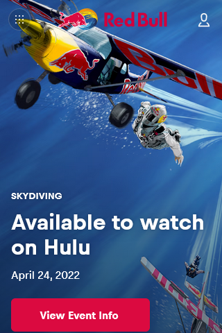
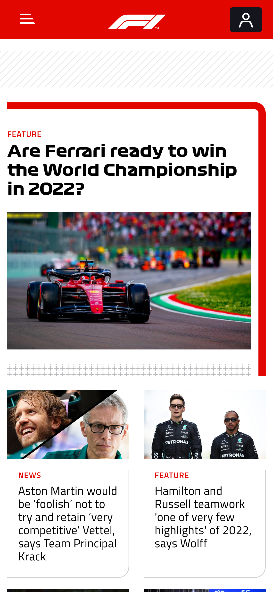
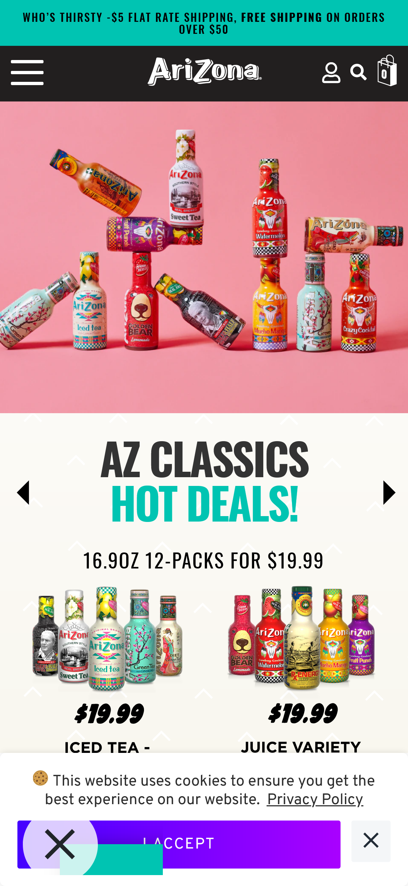

PARC: Repetition
Red Bull
Website: redbull.com
The Redbull webpage uses repetition to flow nicely. The top slider is aligned with the same features on each slide that continually repeats. The same font and color is used in all of the headings throughout the page. Below the slider, posts are displayed in the same repeating format as well.

White Space & Clean Design
Formula 1
Webstie: formula1.com
The Formula 1 website is simple with the use of only 3 main colors: white, black, and red. The white background, black text, and simple red accents work together to make this webpage very clean. There is plenty of white space to keep the viewer's eye focued on the main information.

PARC: Contrast
AriZona Beverages
Website: drinkarizona.com
The AriZona website is full of bold colors and text. The use of bright colors contrasts with the white background and mainly black text. The bold heading fonts draw in the eye and add to the contrast on the page with the simple background.
